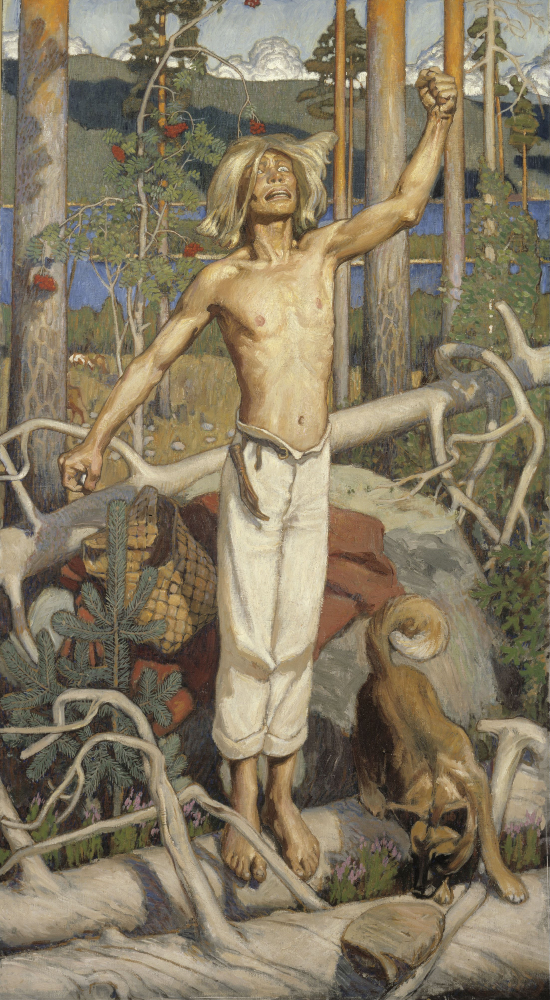

РУНА ТРЫЦЦАЦЬ ШОСТАЯ
Кулерва збіраецца на вайну і высвятляе, што ўсе ставяцца да яго і ягонай задумы абыякава. Толькі маці бядуе аб сыне (1—154). Ён дабіраецца да Унтамолы, забівае ўсіх і руйнуе ўсе хаты (155 – 250). Пасля гэтага ён вяртаецца дадому і знаходзіць сваю хату спусцелай, нікога жывога там не засталося, апрача чорнага сабакі. Кулерва з сабакам ідзе ў лес на паляванне (251 – 296). У лесе ён трапляе на тое месца, дзе зняславіў сваю сястру. Згрызоты сумлення апаноўваюць яго, і ён кідаецца на ўласны меч (297 – 360).

Акселі Галлен-Калела, «Праклён Кулерва», 1899. Грамадскі набытак.
К алервы сын, Кулервойнен,
хлопец у шкарпэтках сініх,
на вайну ісці збіраўся,
на сцяжыну помсты выйшаў,
5 навастрыў свой меч імгненна,
дзіду навастрыў адразу.
Маці так яму сказала:
“Не ідзі, сыночак любы,
не хадзі туды вайною,
10 дзе звіняць мячы няспынна!
Хто ваюе без нагоды,
без прычыны ў бітву лезе,
знойдзе смерць сваю заўчасна,
згубу напаткае ў бітве,
15 ад мяча ён сам загіне,
ад крывавага жалеза.
На казе ты ў бітву едзеш,
на баране ў бой імчышся.
Там казу тваю затопчуць,
20 у гразі баран загіне:
на сабаку ў двор прыедзеш,
вершкі на лягушцы брыдкай.”
Кулервы сын, Кулервойнен,
так сказаў і так прамовіў:
25 “Не ў балоце ж я загіну,
не ў глухой загіну пушчы,
там, дзе крумкачы вядуцца,
падлажэры дзе тлусцеюць!
Я загіну ў слаўнай бітве,
30 на палях баёў вялікіх!
Слаўна і пачэсна ўмерці
пад няспынны звон жалеза.
Баявая ліхаманка –
вельмі слаўная хвароба:
35 без пакутаў муж канае,
не марнеючы сыходзіць.”
Маці так яму сказала:
“Калі на вайне загінеш,
хто заступай татку будзе
40 у гады яго старыя?”
Кулервы сын, Кулервойнен,
так сказаў і так прамовіў:
“Хай памрэ на кучы смецця,
у прагоне хай сканае!”
45 “Хто ж заступай маці будзе,
У гады яе старыя?”
“Хай памрэ з ахапкам сена,
у хляве сваім сканае!”
“Хто падмогай брату будзе,
50 дапаможа ў няшчасці?
“Хай памрэ ў цёмнай пушчы,
хай у баразне сканае!”
“Хто ж сястры заступай будзе,
дапаможа ў няшчасці?”
55 “Хай сканае каля студні,
каля пральні згубу знойдзе!”
Калервы сын, Кулервойнен,
паспяшаўся выйсці з хаты
І да бацькі так прамовіў:
60 “Ты бывай, мой любы татка!
Ці заплачаш ты, пачуўшы,
што загінуў я ў чужыне,
што пакінуў род навекі,
знік я са свайго народу?”
65 Бацька ў адказ прамовіў:
“Не заплачу я, пачуўшы,
што загінуў ты ў чужыне,
нажывем другога сына,
лепшага нашмат, чым маем,
70 разумнейшага набудзем.”
Калервы сын, Кулервойнен,
словы вымавіў такія:
“Дык і я не буду плакаць,
як пачую, што памёр ты.
75 Бацьку сам сабе зраблю я:
рот гліняны, лоб каменны,
вочы з журавін балотных,
барада з травы пачэзлай,
ногі з высахлых галінак,
80 ды з гнілога дрэва цела.”
Потым брату ён прамовіў:
“Ты бывай, братка мой родны!
Ці заплачаш ты, пачуўшы,
што загінуў я ў чужыне,
85 што пакінуў род навекі,
знік я са свайго народу?”
Брат жа у адказ прамовіў:
“Не заплачу я, пачуўшы,
што загінуў ты ў чужыне,
90 нажывем другога брата,
лепшага нашмат, чым маем,
прыгажэйшага набудзем.”
Калервы сын, Кулервойнен,
словы вымавіў такія:
95 “Дык і я не буду плакаць,
як пачую, што памёр ты.
Брата сам сабе зраблю я:
рот гліняны, лоб каменны,
вочы з журавін балотных,
100 барада з травы пачэзлай,
ногі з высахлых галінак,
ды з гнілога дрэва цела.”
Да сястры прамовіў хлопец:
“Ты бывай мая сястрычка!
105 Ці заплачаш ты, пачуўшы,
што загінуў я ў чужыне,
што пакінуў род навекі,
знік я са свайго народу?”
Так сястра яму сказала:
110 “Не заплачу я, пачуўшы,
што загінуў ты ў чужыне,
нажывем другога брата,
лепшага нашмат, чым маем,
разумнейшага набудзем.”
115 Калервы сын, Кулервойнен,
словы вымавіў такія:
“Дык і я не буду плакаць,
як пачую, што памерла.
Сам зраблю сабе сястру я:
120 рот гліняны, лоб каменны,
вочы з журавін балотных,
валасы з травы пачэзлай,
ды з азёрных кветак вушы,
стан з гнілых сукоў кляновых.”
125 Так да маці ён прамовіў:
“Любая мая матуля,
ты ў сабе мяне насіла,
ты мяне ўзгадавала,
ці заплачаш ты, пачуўшы,
130 што загінуў я ў чужыне,
што пакінуў род навекі,
знік я са свайго народу?”
У адказ яму матуля
словы мовіла такія:
135 “Маіх думак не спазнаеш,
не раскрыеш маё сэрца.
Плакаць буду я, пачуўшы,
што загінуў ты ў чужыне,
што пакінуў род навекі,
140 знік ты са свайго народу:
залію слязмі ўсю хату,
хвалямі ўсю падлогу,
на ўсіх вуліцах паплачу,
у хляве ад слёз сагнуся,
145 снег ад слёз заледзянее,
лёд праталінамі пойдзе,
прарасце трава на лузе,
ды ад слёз маіх пасохне.
А як галасіць стамлюся,
150 як не хопіць болей моцы,
плакаць-галасіць прылюдна,
буду ціха ў лазні плакаць,
залію слязмі ўсе лавы,
рэчкай паліюцца слёзы.”
155 Калервы сын, Кулервойнен,
хлопец у шкарпэтках сініх,
на вайну пайшоў са спевам,
з дудачкай пайшоў на бітву.
Граў ён, ідучы балотам,
160 па палянах верасовых,
па лугах з травой высокай,
па сухой траве пачэзлай.
За ім вестка паляцела,
чутка на шляху дагнала:
165 “Сканаў дома стары бацька,
гэты свет навек пакінуў.
Ты хутчэй дамоў вяртайся,
паспяшайся на хаўтуры.”
Калервы сын, Кулервойнен,
170 словы вымавіў такія:
“Як сканаў – спачыў навекі!
Знойдзецца там конь у стойле,
каб на могілкі завезці,
закапаць старога ў яму!”
175 Граў ён, ідучы балотам,
весела па лядах крочыў.
За ім вестка паляцела,
чутка на шляху дагнала:
“Дома брат памёр нядаўна,
180 сын тваіх бацькоў загінуў.
Ты хутчэй дамоў вяртайся,
паспяшайся на хаўтуры.”
Калервы сын, Кулервойнен,
словы вымавіў такія:
185 “Як памёр – спачыў навекі!
Знойдзецца там конь у стойле,
каб на могілкі завезці,
закапаць у яму брата!”
Граў ён, ідучы балотам,
190 паміж елак смела крочыў.
За ім вестка паляцела,
чутка на шляху дагнала:
“Дома ўжо сястра памерла,
любая бацькоў дачушка.
195 Ты хутчэй дамоў вяртайся,
паспяшайся на хаўтуры.”
Калервы сын, Кулервойнен,
словы вымавіў такія:
“Ну, сканала, дык сканала!
200 Знойдзецца кабыла ў стойле,
каб на могілкі завезці,
закапаць сястру ў яму!”
Граў ён, ідучы лугамі
ды іржышчам стравянелым.
205 За ім вестка паляцела,
чутка на шляху дагнала:
“Там твая памерла маці,
спачыла навек старая.
Ты хутчэй дамоў вяртайся,
210 паспяшайся на хаўтуры.”
Калервы сын, Кулервойнен,
словы вымавіў такія:
“Вох! Бяздольны я хлапчына,
спачыла мая матулька,
215 што мне ложак засцілала,
вышывала маю коўдру
ды верацяно круціла,
ды цягнула ніць з кудзелі;
а я быў тады далёка,
220 як матуля памірала!
Мо' ад холаду сканала,
ці ад голаду памерла?
Вы нябожчыцу памыйце
дарагім нямецкім мылам,
225 ды пакрыйце шоўкам чыстым,
палатнянай прасціною!
Завязіце да магілы,
апусціце ў зямельку,
с плачам вы яе вязіце,
230 галасіце над магілай!
Не магу пакуль вярнуцца,
бо не зведаў маёй помсты
Унта, злосны муж падступны,
бо не знішчаны нягоднік.”
235 Граў ён, ідучы на бітву,
на Ўнталу ішоў вясёлы,
сам такія словы мовіў:
“Гэй ты, Укка, бог вярхоўны!
Ты пашлі мне меч магутны,
240 падаруй клінок найлепшы,
каб з натоўпам змог я біцца,
з цэлай сотняю герояў!”
Вось знайшоў ён меч магутны,
атрымаў клінок найлепшы
245 ды ўвесь натоўп адолеў,
вынішчыў увесь род Унты,
зруйнаваў усё навокал,
спапяліў дашчэнту хаты,
засталіся толькі печы
250 ды рабіны на ўзмежках.
Калервы сын, Кулервойнен,
у зваротны шлях пусціўся,
да бацькоўскай роднай хаты,
да бацькоўскіх тых палеткаў.
255 Ды спусцела тая хата,
увайшоў, нібы ў пустэльню:
сустракаць ніхто не выйшаў,
ніхто не раскрыў абдымкі.
Дакрануўся да вуголляў –
260 холадам ад іх патхнула.
Зразумеў тады хлапчына,
што няма ў жывых матулі.
Дакрануўся ён да печкі –
ад камення холад веяў.
265 Зразумеў тады хлапчына,
што няма ў жывых і бацькі.
На падлогу кінуў позірк—
зараслі гразёй масніцы.
Зразумеў тады хлапчына,
270 што няма ў жывых сястрычкі.
Потым ён пайшоў на бераг—
не было чаўна на месцы.
Зразумеў тады хлапчына,
што няма ў жывых і брата.
275 Тут пачаў гаротнік плакаць,
плакаў дзень, другі дзень плакаў.
Сам сказаў такія словы:
“Гэй ты, родная матулька!
Што пакінула ты сыну,
280 жывучы на гэтым свеце?
Маці, ты мяне не чуеш!
На вачах тваіх стаю я,
на брывах тваіх бядую,
на чале тваім рыдаю!”
285 З-пад зямлі яму старая
так з магілы адказала:
“Чорнага табе сабаку
кінула блукаць па лесе.
Ты вазьмі яго з сабою
290 ды ідзі ў дзікую пушчу,
у глухія ідзі нетры.
Там лясных дзяўчат наведай,
гаспадынь лясных блакітных,
у палацы з сініх хвояў,
295 там шукай сабе пракорму,
там прасі сабе здабычу!”
Калервы сын, Кулервойнен,
чорнага забраў сабаку
ды пайшоў у лес далёкі,
300 у глухія пайшоў нетры.
Ён прайшоў зусім нядоўга,
недалёкі шлях адолеў
і дайшоў да таго месца,
апынуўся ў тым жа лесе,
305 дзе зняславіў ён дзяўчыну,
дачку сваёй маці роднай.
Плакаў там лужок прыгожы,
і рыдала там паляна,
і журыліся там травы,
310 кветкі вераса тужылі,
што зняславіў ён тут дзеву,
дачку сваёй маці роднай.
Не ўздымаліся там травы,
не свяціў кветкамі верас,
315 не праклюнуўся расточак,
на злачынным гэтым месцы,
там, дзе ён зняславіў дзеву,
дачку маці сваёй роднай.
Калервы сын,Кулервойнен,
320 выхапіў клінок свой востры,
верны меч свой ён агледзеў,
захацеў клінок паслухаць
і спытаў у сваёй зброі,
ці не хоча меч магутны
325 грэшнага паспытаць мяса,
ды папіць крыві злачыннай.
Зразумеў клінок задуму
адгадаў жаданне мужа
і ў адказ яму прамовіў:
330 “Дык чаму ж не пажадаць мне,
мяса грэшнага паспытаць,
не папіць крыві злачыннай,
калі б’ю невінаватых,
кроў бязгрэшную каштую?”
335 Калервы сын, Кулервойнен,
хлопец у шкарпэтках сініх,
рукаяткай меч уторкнуў,
увагнаў глыбока ў глебу,
джала скіраваў у грудзі
340 і на меч свой паваліўся.
Так знайшоў сваю пагібель,
смерць сваю спаткаў гаротнік.
Так юнак гэты загінуў,
Кулерва, герой няшчасны,
345 так знайшоў сваю пагібель
той пакутнік векавечны.
Стары Вяйнямёйнен звестку,
як пачуў пра смерць героя,
Кулервойнена пагібель,
350 дык сказаў такія словы:
“Гэй, народ, што ідзе за намі!
Не давай дзяцей ты родных
даглядаць і песціць дурням,
гадаваць дурным чужынцам!
355 Калі ж дрэнна даглядаюць
і выхоўваюць дзіцёнка,
той не вырасце разумным
і не стане мудрым мужам
хоць і будзе дужы целам,
360 да сівых гадоў дажыўшы.